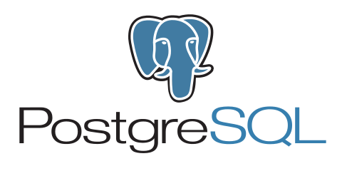
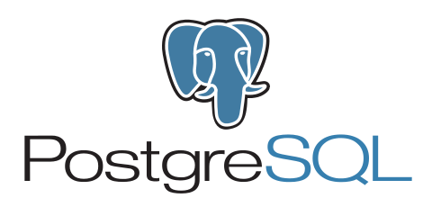

778-255-0530
778-255-0530

JOTHAM YELLE
Junior Full-Stack Web Developer


 



Lionsgate Scaffolding Web-App - PHP
March 2016 - Present
The company I was working for was in a tight situation, so I helped them out. I spent months teaching myself PHP, MySQL, JavaScript, HTML, and CSS. Before too long, I went from zero coding experience to having made a web-app, complete with form submissions, pdf uploads, sms and email notifications. The company I made it for is still using it to this day.

 Asteroids (Student Project) - C++
Asteroids (Student Project) - C++
May 2018 - June 2018
If a program could be a cover song, this would be my rendition of the classic Atari hit, Asteroids.

A web-app that allows learners to save learning resources like tutorials, blogs and videos in a central place that is publicly available to any user. This was a group project of three. I was mainly responsible for displaying the user page and ensuring its functionality, handling the likes, ratings, and comments functionality on each resource, displaying the categories buttons, and ensuring the overall quality of the styling and images.
Lionsgate Scaffold Ltd
July 2015 - July 2018
- Working in a growing starup environment that allowed me to develop in many diverse areas such as:
- Developing and maintaining the company's website and web-app
- Labour positions
- Driving forklifts and 3-ton trucks
- Took initiative to pick up projects where possible
- Often took the lead and set the pace at any given job site
- Regularly enjoyed working in a team setting
- Consistently exceeded job expectations
Lighthouse Labs (Web Development Diploma)
July 2018 - Oct 2018
In this intense 10-week, 12-hour-days, 5-days-per-week web development bootcamp, I learned and developed skills working with JavaScript, HTML, CSS, Node, Express, Bootstrap, Knex, PostgreSQL, MongoDB, jQuery, and more. The hands on approach and readily-available mentorship allowed me to learn quickly and practice writing clean, readable, and modular code. I've gained an appreciation for writing DRY code and keeping things organized. One of the most helpful aspects to this program was the experience I gained with git/GitHub and collaborating with a team.
Brigham Young University - Idaho (Online Bachelor Degree Program in Software Engineering)
Sept 2017 - Present
Online learning has always been an attractive thing for me. Within my first year here, I've studied object-oriented programming, coupling and cohesion, and database structures using the C++ language and a MySQL database.
Nimbus School of Recording & Media (Audio Engineering Diploma)
Sept 2013 - Aug 2014
Having access to 5 professional-rate studios and mentorship from industry professionals allowed for rapid growth in the audio engineering field. I became skilled in recording, editing, mixing, producing, and mastering audio with a specialization in sound for video games and film. It was actually while creating sounds for video games where I developement an appreciation for software development.